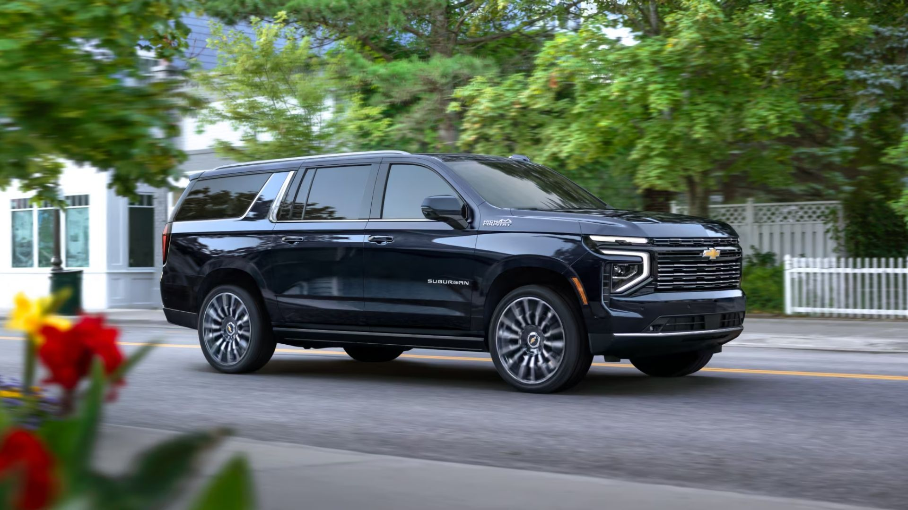

How We Started
A Better Way Between Manhattan and Montauk
Manhattan to Montauk started with a simple frustration: getting from the city to the East End shouldn't mean surge pricing, unreliable pickups, or a driver who has never made the trip before.
We built a private transportation service around one route we know better than anyone. Manhattan, the Hamptons, and everywhere in between. Every driver knows the Long Island Expressway and Belt Parkway traffic patterns and exactly when to leave for a flight out of JFK or LGA.
No apps guessing at your pickup spot. No surprise multipliers on a holiday weekend. Just a car that shows up on time, every time.
